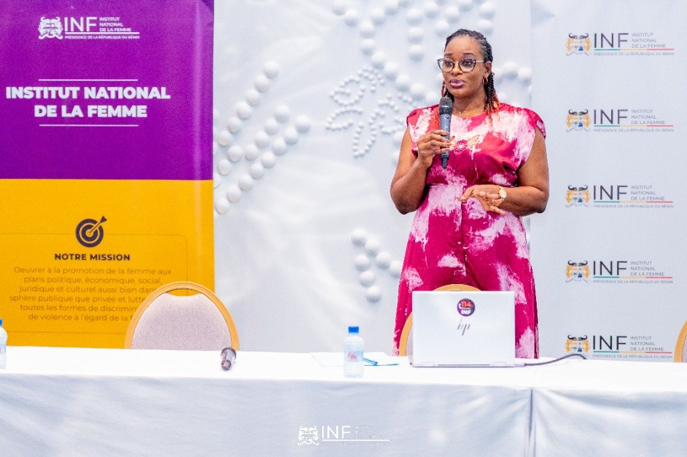

Impact & Distinction
Excellence & Accomplissements
Un engagement d'impact au service des institutions publiques, des femmes victimes de violences et de la formation des futures leaders.
Institut National de la Femme
Secrétaire Exécutive INF Bénin
Direction opérationnelle des programmes de protection, d'assistance juridique et de promotion des droits des femmes au Bénin.
Édition & Transmission
Auteure & Conférencière d'Élite
Ouvrages et guides de référence axés sur l'organisation administrative, le leadership d'impact et la résilience personnelle.
Formations Certifiantes
Masterclasses & Assistante PRO
Plus de 600 professionnelles accompagnées et certifiées pour devenir les bras droits stratégiques incontournables des dirigeants.

Reconnaissances & Impact
Voir tout le parcours académique & distinctions
Prix & Distinctions Honorifiques
WAM UP 2026
Gardienne de la Justice Féminine
Décerné lors du WE4CCA Annual Meet Up en hommage à son engagement à l'INF Bénin.
Février 2026
TOP 20 Afrique Femme Leader
Panafrican Corporates Awards honorant les 20 femmes d'impact majeures du continent.
Éklat d’Or 2023
Sphère Médias & Communication
Gala des Femmes d’Impact du Bénin récompensant son leadership médiatique.
Hearts 2022
Power Woman Solution
Gala de la Femme Entrepreneure et Lauréate Femme d'Impact (Coach & Consultante).
Engagements & Actions
Objectifs Clés pour l'Égalité & l'Impact
Une mission d'action structurée autour de trois piliers fondamentaux de transformation sociale et professionnelle.
Protection & Justice (INF)
Assurer une assistance juridique, médicale et sociale rigoureuse aux femmes victimes de Violences Basées sur le Genre.
Excellence Administrative
Former les assistantes de direction et virtuelles à devenir les bras droits stratégiques indispensables des décideurs.
Résilience & Transmission
Transmettre des clés de reconstruction et d'autonomie financière à chaque femme traversant une épreuve de vie.
MOT DE LA SECRÉTAIRE EXÉCUTIVE
L'égalité devient réelle par le pouvoir d'agir & la confiance.
« L’égalité devient réelle lorsque les femmes disposent du pouvoir, des ressources et de la confiance nécessaires pour agir et transformer durablement leurs communautés et leurs sociétés. »
Formée en Ingénierie du Genre à la Chaire UNESCO avec une spécialisation en VBG, Flore DJINOU met cette conviction au service de politiques publiques inclusives et de programmes de formation d'élite.
FLORE DJINOU
Secrétaire Exécutive de l'INF Bénin
Flore Djinou
Programme Signature "Femmes Leaders" ✦
Leadership Féminin & Puissance Professionnelle ✦
Prévention du Harcèlement & VBG en Entreprise ✦
Programme Signature "Femmes Leaders" ✦
Leadership Féminin & Puissance Professionnelle ✦
Prévention du Harcèlement & VBG en Entreprise ✦
Formations & Programme Signature
Programmes & Modules d'Impact
Des formations immersives et des modules sur-mesure pour affirmer le leadership féminin et prévenir le harcèlement en milieu professionnel.
6 Semaines
Programme Signature
Découvrir le programme
Programme "Femmes Leaders"
Cursus immersif de 6 semaines (1 session de 2h/semaine) pour s'affirmer, impacter et diriger avec assurance.
3h à 4h (Demi-journée)
Module Entreprises
Découvrir le module
1_Leadership féminin & puissance professionnelle
Module interactif avec cas pratiques pour s'affirmer, impacter et diriger en milieu professionnel.
 3h à 4h (Demi-journée)
3h à 4h (Demi-journée)
Module Entreprises
Découvrir le module
2_Prévention du harcèlement et des VBG
Sensibilisation, cadre légal et cas pratiques pour instaurer un cadre professionnel sûr et inclusif.
Presse & Tribunes
Prises de Parole et Actions en Images
Retrouvez ses récentes interventions institutionnelles et événements sur le terrain.
 16 Juin • Cotonou
16 Juin • Cotonou
Forum national sur les investissements au profit du genre
Flore Djinou, Secrétaire Exécutive de l'INF, anime la conférence de presse officielle sur la mobilisation des ressources.
 21 Sep • Nikki
21 Sep • Nikki
Rencontres sur le leadership politique féminin
Lors de la Gaani de la Gnon Kogui, rassemblement des femmes leaders politiques et représentantes institutionnelles.
28 Avr • Parakou
L'INF au cœur de l'engagement citoyen des jeunes
Intervention auprès de la jeunesse et sensibilisation à l'École de Formation Médico-Sociale (EFMS Parakou).
Réseau & Collaborations
Partenaires & Institutions Stratégiques
UNESCO
Chaire Égalité des GenresUN WOMEN
Nations UniesINF BÉNIN
Institut National de la FemmeUNION EUROPÉENNE
Délégation Bénin
Voix & Impact
Voix des Femmes Accompagnées
« Un accompagnement qui a transformé notre structure »
« Flore Djinou allie une rigueur institutionnelle absolue à une profonde bienveillance. Grâce à ses formations, notre pôle administratif a gagné en fluidité et en stature. »
JA
Jane Anderson
Consultante en Leadership Féminin
« L'assurance et les compétences pour l'international »
« Le programme d'Assistance Virtuelle avec Flore a changé le cours de ma vie professionnelle. J'ai acquired la confiance et les outils pour collaborer avec des clients internationaux. »
MA
Mariam Alidou
Assistante Virtuelle Certifiée